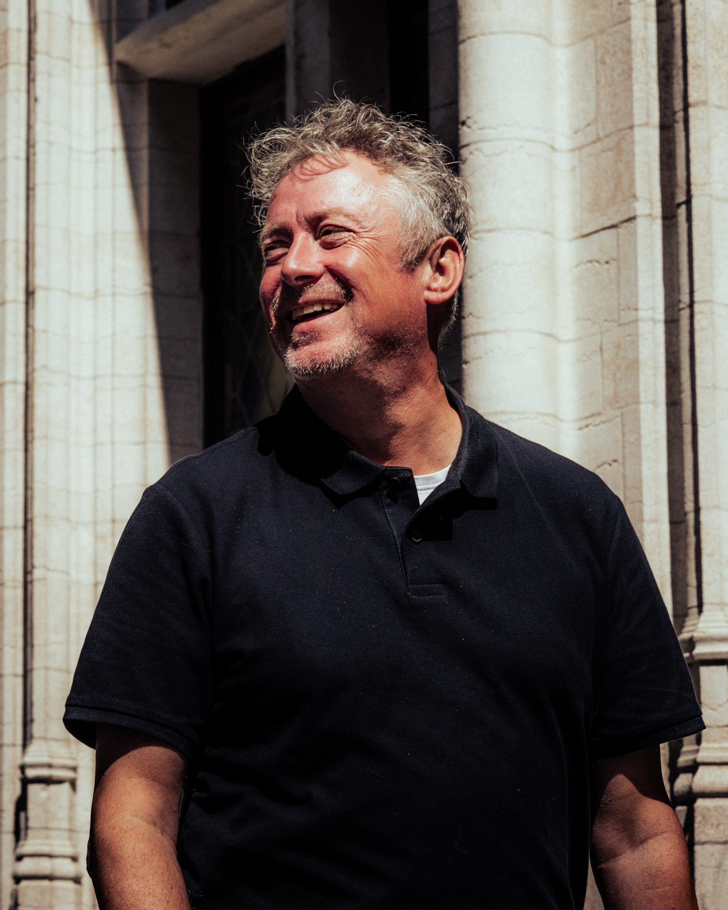

Karel De Kneef
Strategic Cybersecurity Advisor | Deep Passion for People and Technology
With over two decades at SWIFT—including roles as Chief Security Officer, Head of Security Operations, and leader of the Command Centre—I've protected critical financial infrastructure used by 11,000+ institutions globally. Now, through Karleef Cyber, I help organizations navigate emerging threats including the post-quantum transition.
My approach combines strategic vision with pragmatic execution. I demystify complex security concepts, align cyber resilience with business objectives, and ensure your organization is prepared for both today's threats and tomorrow's quantum reality.
Background & Experience
20+ Years at SWIFT
Chief Security Officer ensuring integrity and availability of global financial messaging. Led the Customer Security Program advancing cybersecurity standards for 11,000+ institutions.
Security Operations Leadership
Established the Customer Security Intelligence team, analyzing cyber incidents and developing threat intelligence for the global financial community. Led SWIFT's Command Centre for crisis response.
Strategic Advisory
Advising boards and executive teams on cyber resilience strategy, digital transformation security, and emerging threats including quantum computing. Available for interim management.
My Approach
Practical Over Theoretical
I focus on what you can implement, not academic exercises. Every recommendation comes with clear next steps and realistic timelines.
Board-Level Clarity
Complex technical concepts translated into language executives understand. You shouldn't need a PhD in mathematics to make informed decisions about quantum risk.
Honest Assessment
No fear-mongering or exaggeration. The quantum threat is real but manageable with proper planning. I'll give you a realistic picture of your risks and timeline.
Tailored Guidance
Every organization is different. Your industry, data types, regulatory environment, and technical maturity all shape the right approach for you.
"Doing nothing is a decision too. The organizations that start planning now will have a competitive advantage in the quantum era. Those who wait may find themselves racing against an immovable deadline."
Speaking & Thought Leadership
Sharing insights on quantum-safe transitions and security strategy
Post-Quantum Readiness for Financial Services
Executive briefing on HNDL threats and migration strategies for the financial sector.
Building Your Cryptographic Inventory
Hands-on workshop for security teams on discovering and documenting cryptographic assets.
Quantum Risk for Board Members
Executive-level presentation on quantum threats and governance responsibilities.
Interested in having me speak at your event or organization?
Get in TouchReady to Start Your Quantum-Safe Journey?
Let's discuss how I can help your organization prepare for the post-quantum era.